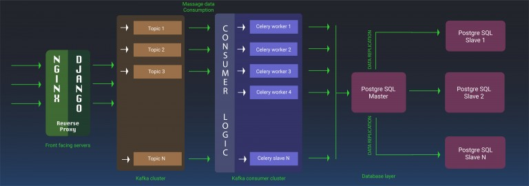

APRIL 4,2016 CUBE26 BLOG,TECHNOLOGY
Tagged Anthony Goldbloom, Bazaar model, Big data, Cathedral model, data, Data science, Data Scientist, engineers, Gutenberg, aggle, Mathematical, Nate Silver, Printing press, scientists, Software developers, statustical, The Cathedral and the Bazaar, The signal and the noise
BY ANUJ BANSAL
We at Cube26 are revolutionizing customer experience across devices by using our expertise in Android Customisation. We work with multiple OEM’s and help them to keep their products relevant to current market trends & customer requirements.
Some facts about the DATA we collect:
- With multiple products and close to 5 million devices, we collect data for 100M+ events.
- Each event data translates to one data point in our system or one row in our database system.
To manage huge amounts of data coming into the system, we are redesigning the entire backend system of our technology stack. Needless to say, we aim to select the best open source technologies available and combine it with our custom backend code. That will help us to scale our system in case our incoming data grows 50X in size.
Through this blog, I want to take you through our backend technology stack along with giving insights behind selecting each technology.
Tech Stack Block :
The diagram below is a glimpse of how our backend layer would look like when reduced to blocks
The idea behind building a scalable system is to make each layer as simple and as loosely connected with the next/previous layer so that its maintenance is not an issue and it prevents the system from going offline ever (if possible).

Now I would like to explain about each layer at length, highlighting the reasons for selecting a particular technology, its scalability and maintenance.
Layer 1: Server layer (Nginx + Django):
Why Nginx & Django
To start off things, the first requirement was to identify an endpoint from where we can collect some data. We began by picking the most popular web server available out there and needless to say Nginx with its vast ecosystem of extensions is the best we could ask for. I would like to quickly highlight some useful features of Nginx.
-
Failover
-
Geo-Distributed nodes
-
Global IP configuration
-
Load Balancing
Although Nginx is a powerful server, we still need something extra that will help us open our API endpoints, post data from Android devices and then process it in the backend system. For this job, we believe Django is the best option available. It is a simple MVC system that gets integrated well with Nginx, via the Nginx reverse proxy configuration, and makes REST API endpoints available for the outside world.
Scalability of Nginx
-
Using Nginx we could add more servers into the system to make the system highly available, and low of latency.
time these kids are all set to make an entry back in the game.
-
From a maintenance point of view, we could bring a few nodes to rest at some point, while their relatives take on the load till the
-
time these kids are all set to make an entry back in the game.
Layer 2: Server layer (Kafka):
Why the need for a Server Layer:
-
As mentioned above, we foresee a lot of data coming into the system at a very rapid pace. Handing the data from the server layer directly to the backend scripts and from there to DB is definitely suicidal.
-
To protect our systems from getting overwhelmed with a huge amount of data, it was important to bring in a system that could collect & hold the data so that the backend scripts could write data to the DB at a constant rate without overloading it.
Why Kafka:
Kafka is a popular distributed messaging system that qualifies for this job. Since Kafka introduces itself as a distributed messaging system, I will leave the discussion of scalability to the point of bringing more redundancy into the system and make scalable and highly available.
Redundancy in the system should take care of the downtime during maintenance.
However,bringing in Kafka alone wouldn’t have solved the purpose. There was a strong need to harness the in-built power of Kafka by maintaining different messages in different queues a.k.a Kafka topics. With a huge amount of data coming in, the best way forward was to categorize our event data on the basis of some in it and keep them in separate Kafka Queues. This would give us the flexibility to process & fan out (via a consumer) a specific class of data in a different way than other classes of data.
Kafka also allows users to further scale each message queue by simply creating more partitions for each queue and introducing redundancy in the system.
Being a distributed messaging system, Kafka also allows users to keep few nodes in one data center and rest in others. This is an important feature as it helps in high availability in case there is a temporary network issue with a particular data centre.
Layer 3: Consumer Layer:
Till this point, we have collected and stored the raw data in our Kafka cluster. We now need to process this data, save it in a data store relationally, and fan it out to some other layer of interest. For this, we have attached our custom Python code to the Kafka cluster to consume the data at a steady pace.
About our custom piece of code, I would like to mention that we make extensive use of Python’s multiprocessing module to spawn multiple processes that would listen to each Kafka topic and process the incoming stream of data for that topic. Following industry trends, we plan to benchmark our system and in case the results don’t come as promising as we desire, we plan to throw in some multithreading under each process to consume messages in parallel (we are doing it one by one as of now) from the Kafka Topic and increase the overall performance of the system.
Layer 4: The Database Layer:
I would like to mention that we have been using MySQL as our primary DB engine for our internal tasks. So, first choice was to simply go with MySQL in the backend though some of us had some qualms about its performance in case we end up saving some hundreds of millions of rows in our main events table.
I know Facebook uses MySQL in the backend but just to let you know, they have a dedicated team to tweak the MySQL engine to suit Facebook’s needs. I am quite sure those guys are like Dr. McNinja and till now they would have operated & replaced the backbone of MySQL. So, we decided to look for an alternative that could perform better from the point of view of running Analytics & Business Intelligence queries with these many rows in the system.
PostgreSQL is another open source that performs very well in this regard. We decided to go ahead with the newly released PostgreSQL version 9.5. You can read a quick comparison between MySQL & PostgreSQL here.
From the point of scaling and adding failover capabilities into the system, we are making use of repmgr that makes life easier when it comes to setting up a cluster of DB nodes, switching between nodes during failover (the process automated in repmgr), and adding a redundant node in the system. We are yet to setup an end to end system and test its performance. Will be getting some numbers out of the system and posting them very soon.
As stated in the beginning the purpose of this article was to introduce the reader to the set of technologies we have picked up to design a simple & scalable system from a backend point of view. In the end, I hope I have justified our choice of using these technologies and it would benefit the readers as well in some way.